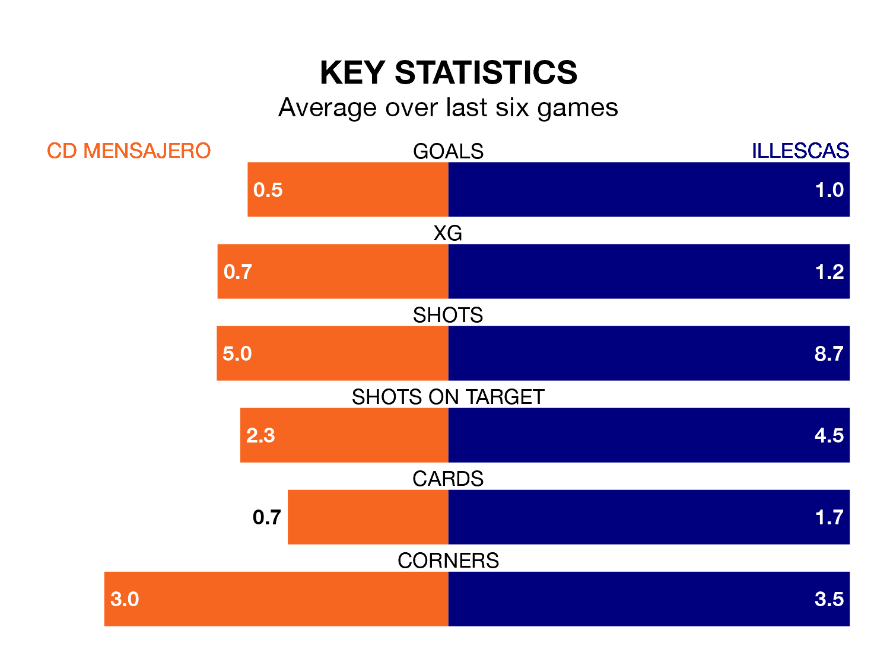

Relegation candidates CD Mensajero face a challenge against high-flying Illescas at the Estadio Silvestre Carrillo on Sunday.
CD Mensajero are 17th in the Segunda División RFEF Group 5 table, and have picked up four wins and 10 draws in their 25 games to date.
Illescas, meanwhile, are third in the standings with 41 points, having won 11 and drawn eight, and are two points behind table-toppers SS Reyes.
With 30 goals in 25 games so far this season, Illescas are scoring more than average in the league with 1.2 goals per game. And they are conceding fewer than average, letting in 21 goals at a rate of 0.8 per game.
Mensajero, meanwhile, are below average scorers, with 1.0 goal per game, compared to a league average of 1.1. They have conceded 1.4 goals per game.
The hosts are in mixed form in the Segunda División RFEF Group 5, with two wins and a draw from their last six games.
With two wins and three draws over that period, the away side's form is slightly better – they have taken nine points from 18, compared to Mensajero's seven.
Mensajero's last match was on March 3, a 1-0 loss against Atlético Paso.
Illescas drew 0-0 with Getafe B last time out, on March 2.
Updated: 09:34 (UTC), 08/03/24